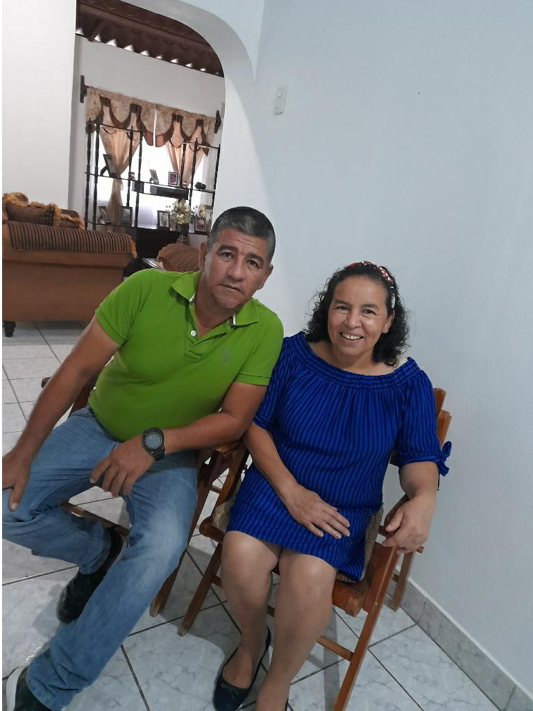
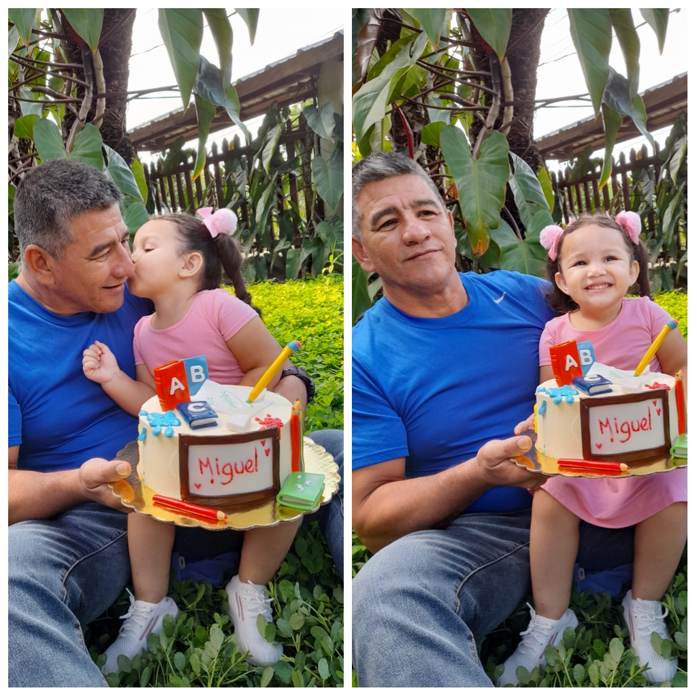
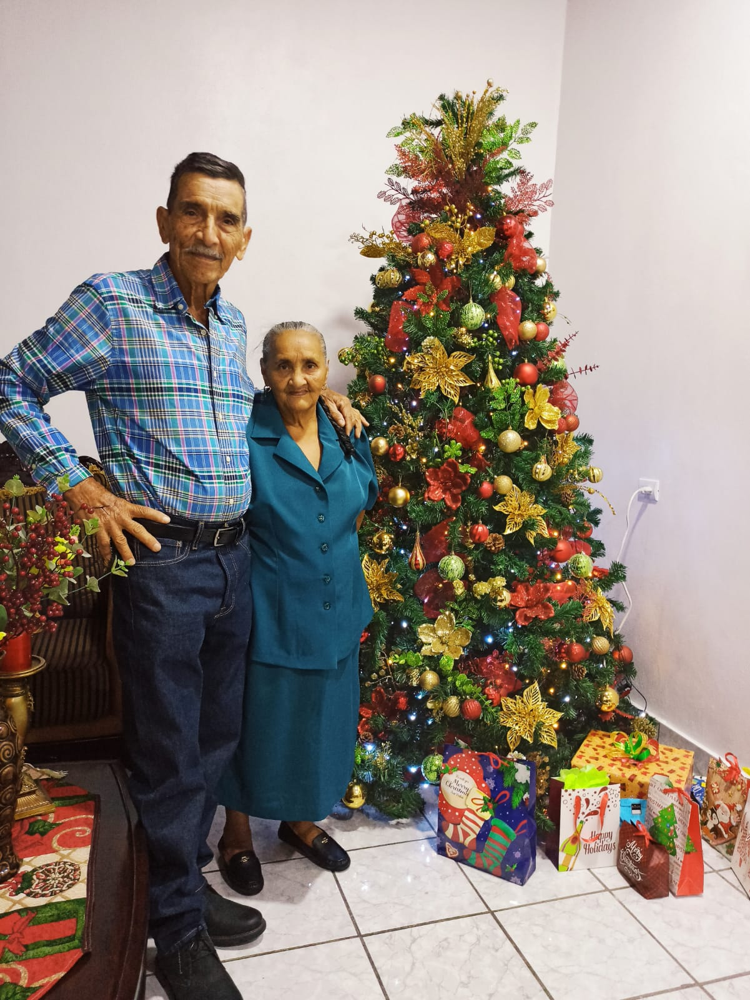
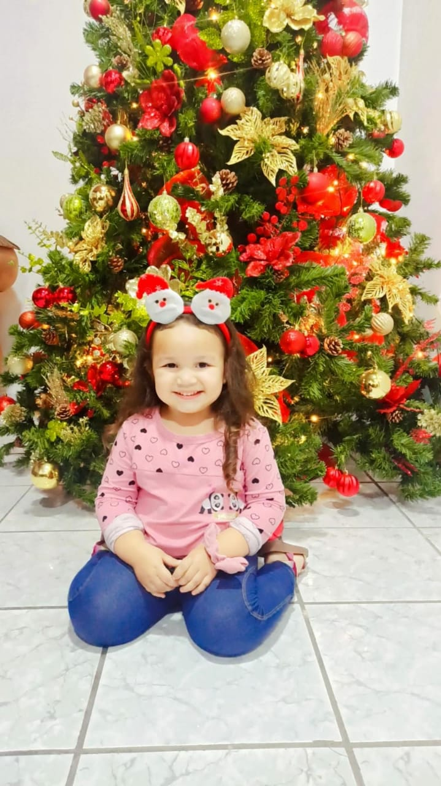
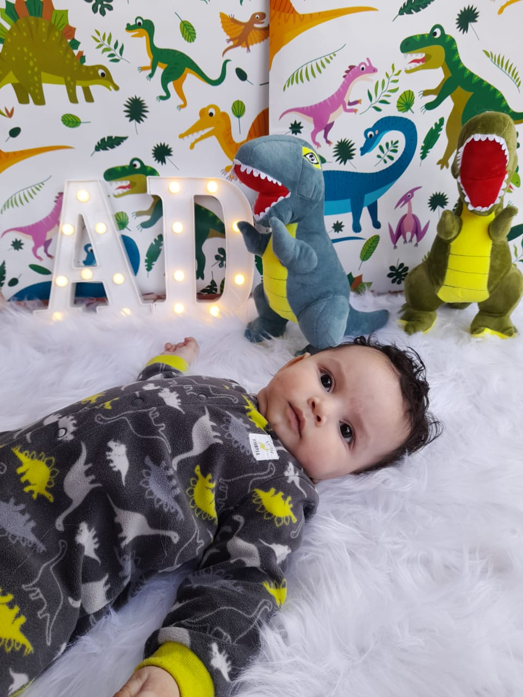
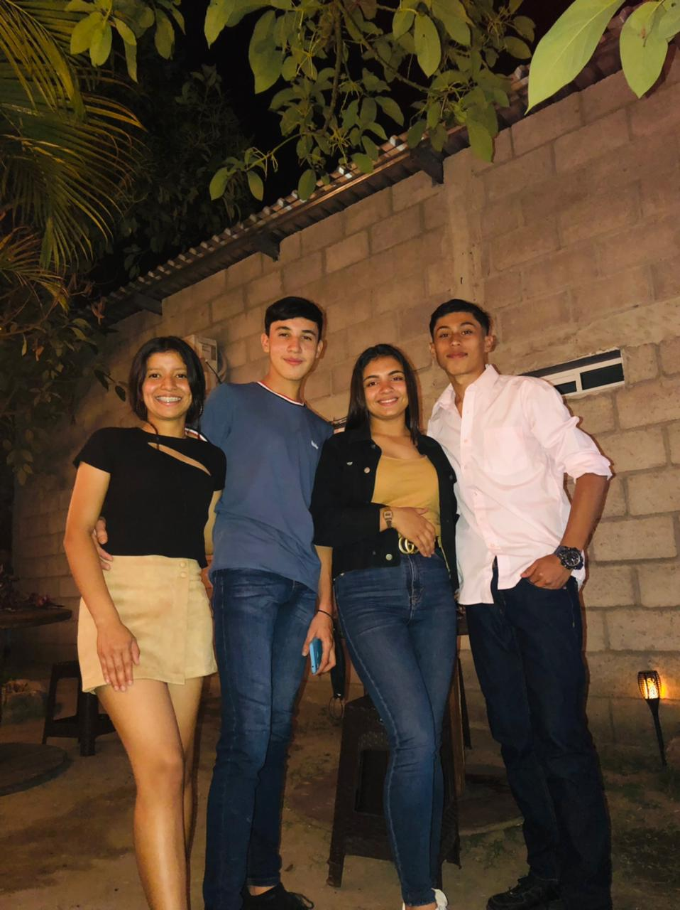

| Las personas que más aprecio en mi vida son: |
| Mis Padres: |
De mis padre le admiro todo desde sus defectos y virtudes, no sé muy bien pero creo que es porque a sus defectos no les toma importancia y a sus virtudes las expresa a través de un ejemplo para mí y mis hermanos. De ellos puedo admirar infinidad de cosas, porque para mí él es un súper héroe, grande y valiente que nadie lo vence, sólo lo doblega pero él vuelve a su normalidad en cuestión de segundos, horas, días, meses, puede que hasta años según el problema que se le presente.
Pero lo que más admiro y aprecio de ellos es su aprecio a la vida, el sin darse cuenta nos enseña a mis hermanos y a mí que no importa nada de lo que nos pase sea bueno o malo siempre tenemos que seguir adelante con la mirada fija y hacia arriba cada vez que caigamos nos tenemos que levantar porque esa es su forma de pensar.
Para mí ellos son la persona más apreciable de toda mi vida porque siempre está pendiente de toda su familia sin importar lo que a él le pase siempre está junto a nosotros. Primero porque jamás se dieron por vencidos por los problemas que tuvimos familiares y lo supieron superar por hacerme entender lo que está bien y lo que está mal por estar hay siempre que los necesito.
A mis padres a quien admiro por su calidad humana e intelectual, por demostrarme en la cotidianidad del día a día incondicionalmente y educarme con el objetivo de mejorar mi vida como actitudes para enfrentar la vida con el amor, alegría, la generosidad, el respeto, etc. .
Por esto y por haber logrado darme todas las condiciones para que haya sido una buena persona muy feliz en cada una de las etapas que he vivido y me falta vivir, estaré agradecido siempre con ustedes ¨TODA LA VIDA" |
 |
 |
| Mis abuelos: |
| Los pasos de mis abuelos son lentos, sencillamente pareciere que el pasar del tiempo no tuvo piedad con él, con su vida.
Pareciere que cada día lucha contra el cansancio, pero eso solo es una pequeña parte de su vida diaria, lo que en realidad importa es que al término de cada día, es que mi abuelo siempre le gana la batalla a todos estos imprevistos, estos pequeños retrasos que quieren para la acelerada vida que él lleva.
Lo anterior es porque el hecho que este viejo no quiere decir que esté cansado, él simplemente es feliz, feliz al lado de su familia, feliz en su casa, feliz disfrutando de cada cosa producto de con su arduo y duro trabajo, feliz de poder gozar y disfrutar de cada cosa por la cual se esforzó durante toda su vida.
Mis abuelos en ocasiones me agradecen, él dice que gracias por permitirle disfrutar de la dicha de ser abuelo, él dice que durante toda su vida luchó por tener todo lo que en su vejes necesitaría, pero que realmente lo mejor que pudo hacer fue tener a su hijo y criarlo con admirable moral.
Cada que mis abuelos hacen esto, me enseña e instruye sobre el gran valor de la gratitud, y lo que esté en verdad significa. Gracias a Dios por permitirme conocer a mis abuelos, gracias a la vida por permitirme disfrutar cada día a su lado, gracias a mi abuelo y abuela por ser los mejores de todo el mundo, gracias, simplemente gracias.
|
 |
.jpeg) |
| Mis Hermanos: |
| Doy gracias a Dios por tener a mis hermanos porque siempre están ahí y hacen posible la hermosa familia que tenemos construcción que resulta algunas veces difícil jaja; pero que ha hecho que hayamos logrado tener una familia excepcional. |
 |
 |
| Mis Sobrinos: |
| Par mí son el reflejo de mi hermana, de una de las mujeres que más quiero en este mundo. Son tan pequeños pero, cada vez logras más importantes metas, y nosotros como familia aportamos en ello, pero no saben también todo lo que nos ensenas y los grandes aportes que traes a nuestras vidas.
Sus cariños, su amor, y sus grandes manifestaciones de afecto, son una gran bendiciones de Dios, que dan muestra de las buenas cosas que una sobrina tiene para ofrecer, y con ello, nuestra familia en general.
Les doy gracias a ellos por suponer mi constante motivación y ayudarme a siempre a tener una alegría en cada momento de mi vida.
|
 |
 |
| Mis Amigos: |
| Ellos son mis amigos a los cuales les agradezco por haber hecho de tiempos y espacios vacíos las mejores experiencias, anécdotas, aprendizajes y grandes afectos que valoro y que recordare siempre. |
 |
|
|
|